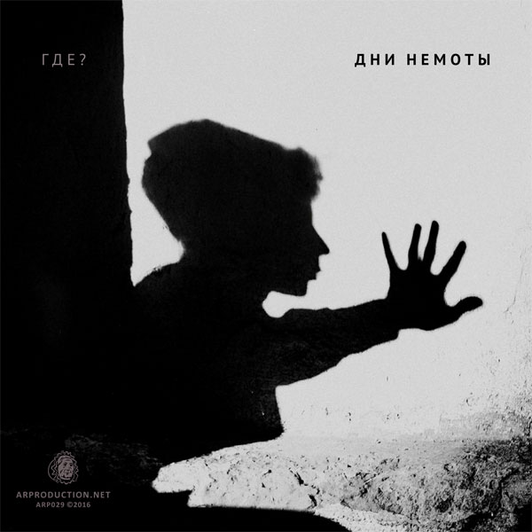
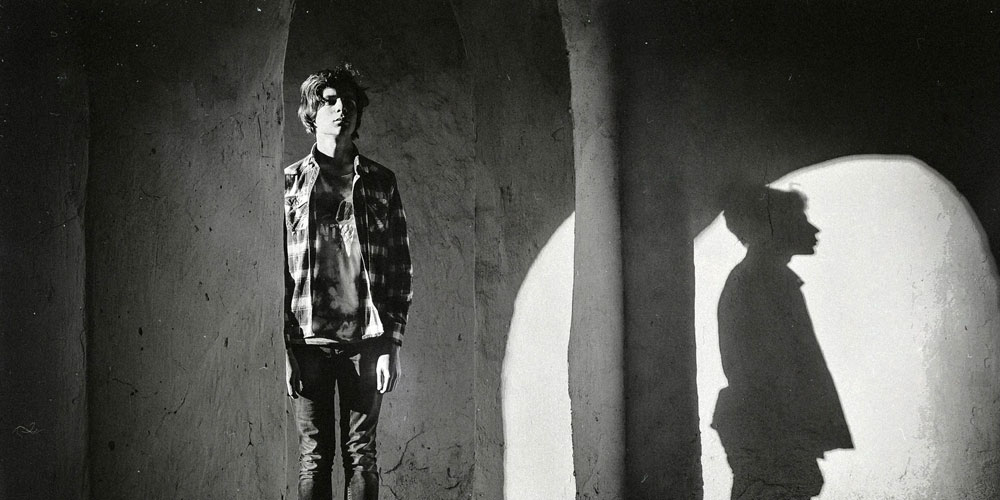

Юрий Шевченко · ГДЕ? · Дни немоты
Саундтреки миномётных сновидений


Руслан Гончаров: тексты (все, в т. ч. 8 — вольный перевод стихотворения Дж. Моррисона «The Endless Quest a Vigil»), музыка (1, 2, 4–6), сопродюсирование.
Юрий Шевченко: текст (3), музыка (1–5, 7–9), вокал (1–8), запись вокала, вёрстка обложки.
Антон Бессонов: аранжировка, гитара, бас-гитара, шёпот (5), саунд-дизайн, семплирование, сопродюсирование.
Дина Галузо: основная аранжировка (2, 4, 6), вокал (2, 9), бэк-вокал (4).
Роман Дегтяренко — текст (3).
Алексей Нагорных — запись бэк-вокала (4).
ARProduction: запись, сведение, мастеринг. Особая благодарность Роману Кондратьеву (LikeDiamonds) и Василию Ткачу за предоставленные семплы, а также Дмитрию Дуброву (PLOTNIK82) за синтезатор «Поливокс».
Илья Вараксин — фото на обложке.
Дата релиза — 8 августа 2016 г.